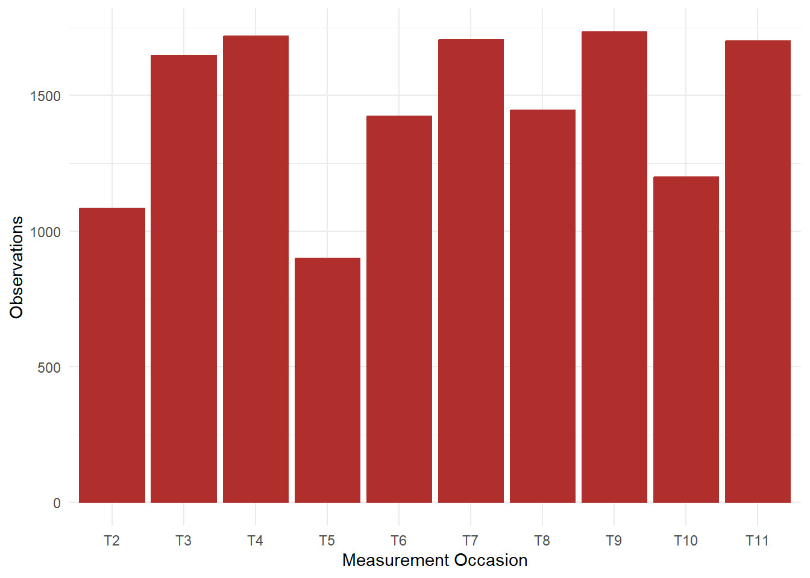

| T1 | T12 | T24 | T43 | ||
| T13 | T25 | T44 | |||
| T2 | T14 | T26 | T45 | ||
| T3 | T15 | T27 | T46 | ||
| T4 | T16 | T28 | T47 | ||
| T5 | T17 | T29 | T36 | T48 | |
| T6 | T18 | T30 | T37 | T49 | |
| T7 | T19 | T31 | T38 | T50 | |
| T8 | T20 | T32 | T39 | T51 | |
| T9 | T21 | T33 | T40 | T52 | |
| T10 | T22 | T34 | T41 | T53 | |
| T11 | T23 | T35 | T42 | T54 |
Comment: one could select more and more items with “&” or “|” operators, indicating only observations where all/at least one of these items was measured. The table would then show, which measurement points would remain with this selection.
Intro: Please think about the last 3 Months/4 Weeks
Text: My work allowed me to take initiative
Scale:
Citation: Morgeson, F. P., & Humphrey, S. E. (2006). The Work Design Questionnaire (WDQ): Developing and validating a comprehensive measure for assessing job design and the nature of work. Journal of Applied Psychology, 91(6), 1321 -1339. https://doi.org/10.1037/00219010.91.6.1321
Intro: Bitte denken Sie bei der Beantwortung der folgenden Fragen an
die letzten 3 Monate/ 4 Wochen.
Text: Meine Arbeit ermöglichte es mir, Initiative zu übernehmen.
Scale:
Translation: Stegmann, S., van Dick, R., Ullrich, J., Charalambous, J., Menzel, B., Egold, N., & Wu, T. T.-C. (2010). Der Work Design Questionnaire. Zeitschrift Für Arbeits- Und Organisationspsychologie A&O, 54, 1 -28. https://doi.org/10.1026/0932-4089/a000002
| MP | TP | MP | TP | MP | TP | MP | TP | MP | TP | MP | TP |
|---|---|---|---|---|---|---|---|---|---|---|---|
| T1 | 12/19 | T12 | 01/21 | T24 | 01/22 | T43 | 01/24 | ||||
| T13 | 02/21 | T25 | 02/22 | T44 | 02/24 | ||||||
| T2 | 03/20 | T14 | 03/21 | T26 | 03/22 | T45 | 03/24 | ||||
| T3 | 04/20 | T15 | 04/21 | T27 | 04/22 | T46 | 04/24 | ||||
| T4 | 05/20 | T16 | 05/21 | T28 | 05/22 | T47 | 05/24 | ||||
| T5 | 06/20 | T17 | 06/21 | T29 | 06/22 | T36 | 06/23 | T48 | 06/24 | ||
| T6 | 07/20 | T18 | 07/21 | T30 | 07/22 | T37 | 07/23 | T49 | 07/24 | ||
| T7 | 08/20 | T19 | 08/21 | T31 | 08/22 | T38 | 08/23 | T50 | 08/24 | ||
| T8 | 09/20 | T20 | 09/21 | T32 | 09/22 | T39 | 09/23 | T51 | 09/24 | ||
| T9 | 10/20 | T21 | 10/21 | T33 | 10/22 | T40 | 10/23 | T52 | 10/24 | ||
| T10 | 11/20 | T22 | 11/21 | T34 | 11/22 | T41 | 11/23 | T53 | 11/24 | ||
| T11 | 12/20 | T23 | 12/21 | T35 | 12/22 | T42 | 12/23 | T54 | 12/24 |
